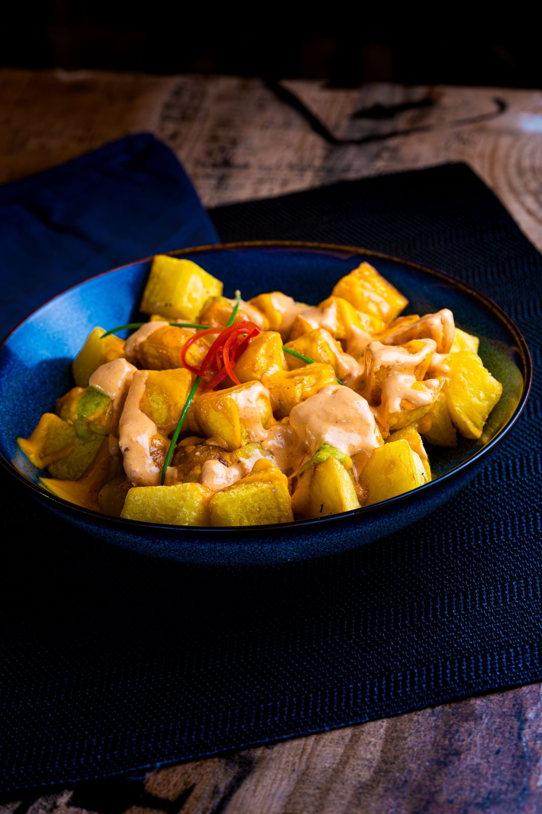
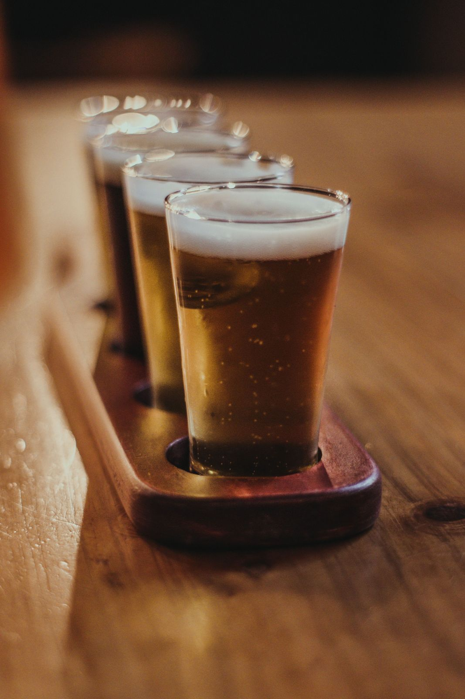
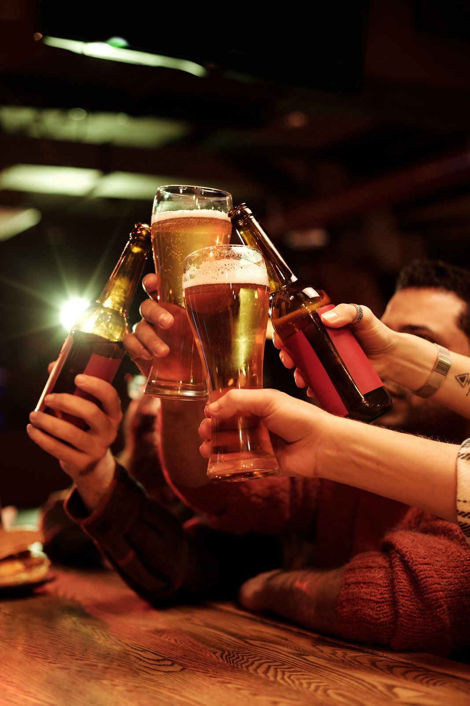
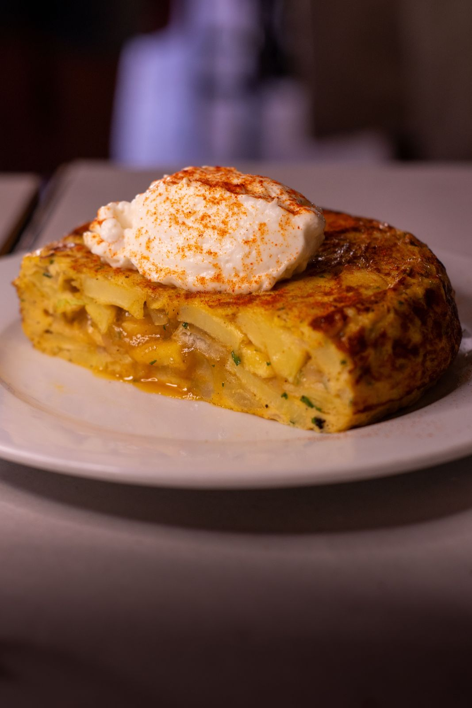
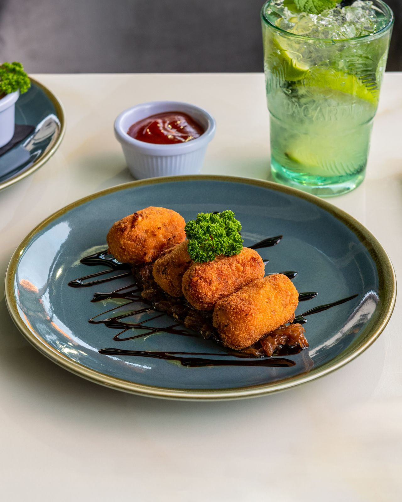
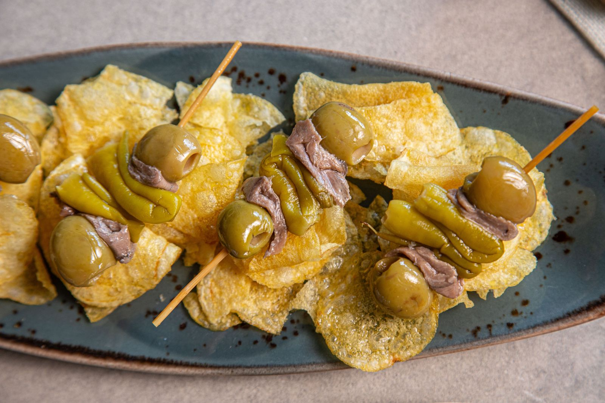
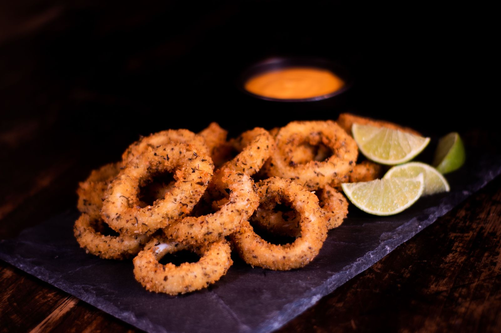
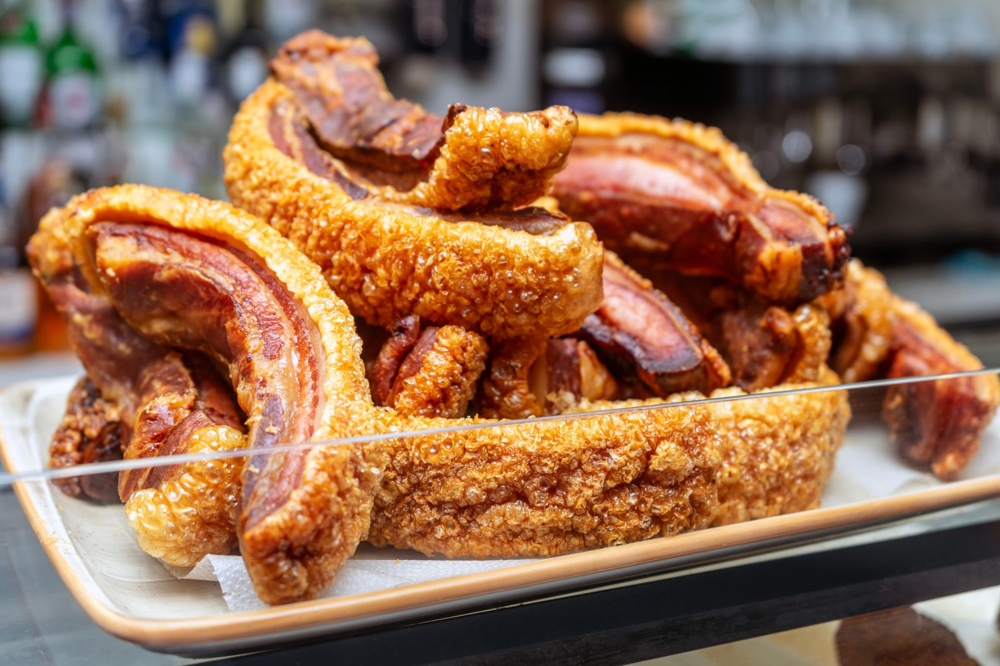
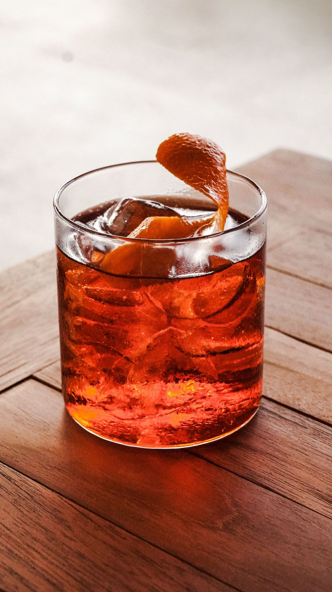
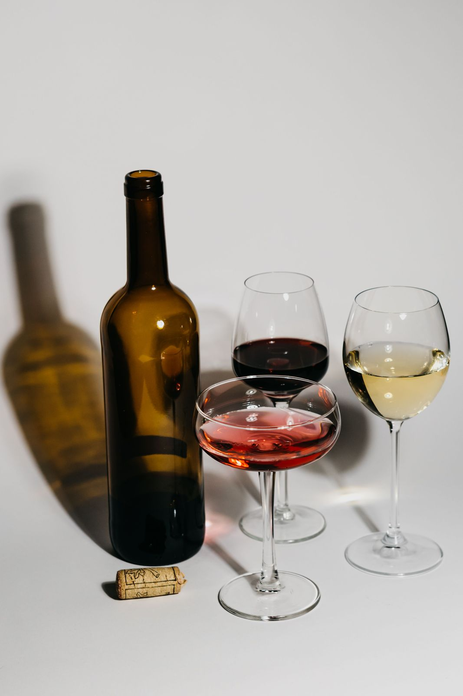

Bravas
Las de siempre.
6,50 €

Cañas, tapas, vermut y buen rollo
01 / El bar
El sitio de las cañas improvisadas, las sobremesas que se alargan y las tapas que nunca fallan. Abrimos en 1987 en la misma esquina y seguimos poniendo la tapa con cada consumición, como siempre.


Desde siempre. Para siempre.
02 / La carta
Mostrando 9 productos

Las de siempre.
6,50 €

De jamón. Bien cremosas.
8,00 €

Pura tradición.
2,50 €
Con cebolla. Sin debate.
9,00 €

A la romana, con limón.
11,00 €

Crujen. Mucho.
8,50 €
Fría y bien tirada.
2,20 €

Con su naranja y su aceituna.
3,50 €

Tinto o blanco, tú eliges.
2,80 €
03 / Especial de la casa
04 / Nos vemos en el bar
| Lunes a jueves | – |
|---|---|
| Viernes y sábado | – |
| Domingo | – |